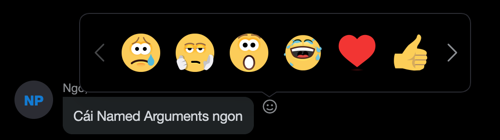
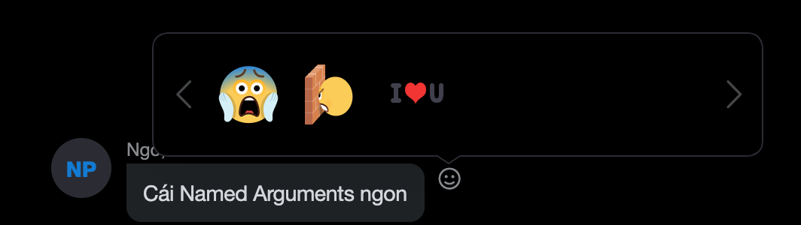

Custom Reaction emoticons list
BEFORE
AFTER
Command generator : make a skype command to change your reaction set in the message reaction picker
Step 1: Remove default set (optional)
Step 2: Select your favourite emoticons
Available emoticons (Click item to add)
Selected emoticons (Click item to remove)
Step 3: Copy below command
Step 4: Then paste above comamd to your skype message input and click send button/enter
Note 1: If you want to reset reaction set to default, use skype command “/resetreactions”
Note 2: Some emoticons are not available for using as reaction